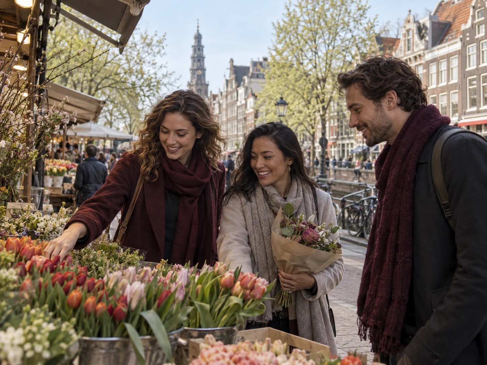
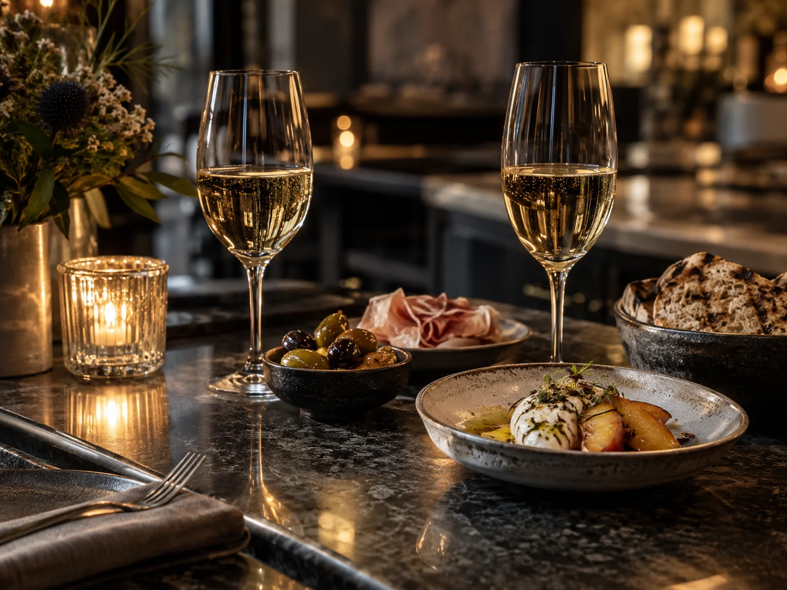
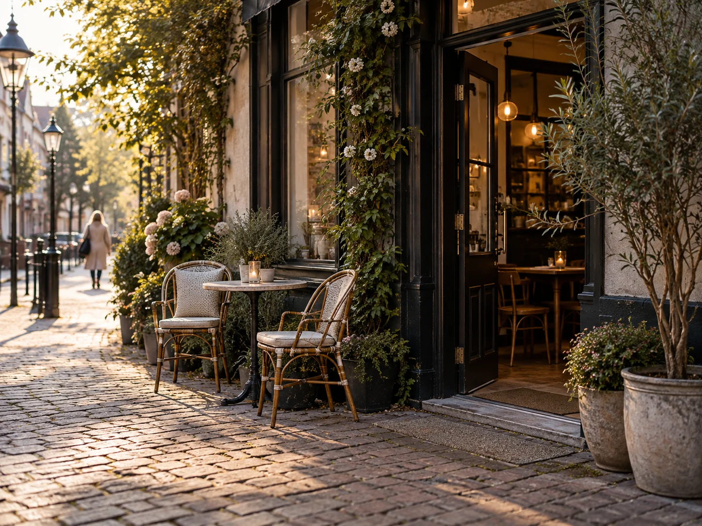
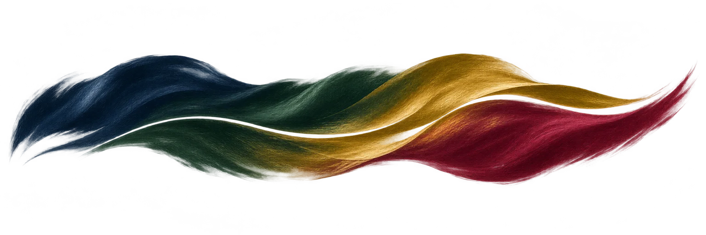

Over LivingOS
← Terug naar het magazine01 · Uw dag in samenhang
Wat vandaag vraagt.
Wat vandaag brengt.
Een afspraak in de ochtend. Een bericht dat nog aandacht vraagt. Een avond met mensen die u graag ziet. Het dagelijks leven laat zich niet in één lijst vangen.
LivingOS brengt bestaande afspraken, gesprekken en plannen binnen bereik. U ziet wat er staat en waar u verder kunt. Zo blijft er ruimte voor wat de dag bijzonder maakt.
Uw dag in beeld
Afspraken uit uw RTG-agenda en aanwezige boekingen staan op tijdsvolgorde. Bij elke regel ziet u waar deze vandaan komt en waar u verder kunt.
Zo werkt het
Het dagoverzicht leest bestaande bronnen; het maakt geen tweede agenda. Het deelt uw dag niet zelfstandig in en vermeldt wanneer een bron niet bereikbaar is. Uw eigen sessie bepaalt welk overzicht u ziet.
public/apps/life.html; server/routes/dagcoach.js; server/kern/dagcoach.jsWeer bij in een gesprek
Een samenvatting brengt de hoofdlijn terug. Herkende afspraken staan apart, zodat u ze kunt nalezen voordat u verdergaat.
Zo werkt het
Samenvatten en herkenbare datums lezen werken zonder taalmodel. Voor een nieuw conceptantwoord is wel een beschikbaar model nodig. Dat concept verschijnt in uw invoerveld: u leest, wijzigt en verstuurt het zelf. Alleen een gesprek waartoe u toegang heeft, kan worden gelezen.
public/apps/comm.html; server/routes/member/comm-stand.js; server/kern/berichten/ai.jsWeten wat vaststaat
Een goed voorstel helpt u kiezen. In de avondplanner ziet u afzonderlijk wat voorgesteld, aangevraagd of bevestigd is.
Zo werkt het
Een tafel aanvragen is niet hetzelfde als een bevestigde reservering: de zaak beslist. Het plan toont de status van iedere stap. Voor aanvragen, betalingen en gegevensgebruik blijven de controles van de betreffende dienst gelden.
public/apps/avond.html; server/routes/avond.js; server/kern/avond/plan.js02 · Tijd voor elkaar
Een avond begint
vóór het aan tafel gaan.
Hoe laat wilt u beginnen? Met hoeveel mensen? En wat wilt u uitgeven? De avondplanner maakt van die keuzes een voorstel op basis van het aanwezige aanbod, met de volgorde, tijden en bekende kosten bij elkaar.
Past de planning of het bekende bedrag niet, dan krijgt u dat te zien. Ontbrekende prijzen blijven als onbekend vermeld. Pas wanneer u aanvraagt, gaat een voorstel verder; een tafel staat pas vast nadat de zaak heeft bevestigd.
03 · De mogelijkheden
Een persoonlijke basis.
Voor iedere dag.
Begin bij wat u nodig heeft: overzicht, een gesprek, een plan of iets om te ontdekken. Welke functies u kunt gebruiken, hangt af van uw toegang en de beschikbare diensten.
Vandaag en vooruit
Plan in uw agenda en bekijk wat vandaag samenkomt. Een dag zonder afspraken hoeft niet te worden opgevuld.
Zo werkt het
De agenda blijft de plek waar u plant en wijzigt. Het dagoverzicht neemt bestaande afspraken en boekingen over en geeft een gewoonte zonder tijdstip geen verzonnen tijd. Ontbrekende gegevens worden niet als een score gepresenteerd.
public/apps/agenda.html; public/apps/life.html; server/kern/dagcoach.jsMensen en gesprekken
Contact houden, iets terugvinden of een verhaal delen. Met toegang die past bij de relatie en de inhoud.
Zo werkt het
Een contactverzoek kan worden aanvaard, geweigerd of ingetrokken. Voor privéberichten tussen leden is een actieve verbinding nodig. Een gedeelde Salon-post blijft afhankelijk van de toegang van de ontvanger; verbonden zijn opent niet automatisch alle inhoud.
public/apps/comm.html; server/routes/social/leden.js; server/kern/sociaal/dmpost.jsUw voorkeuren
Een rustige tafel, een favoriete drank, een bijzondere gelegenheid. U kiest wat u vastlegt en hoe het gedeeld mag worden.
Zo werkt het
Gastvoorkeuren hebben per soort een deelinstelling, met beperkingen per zaak. Toegankelijkheidswensen staan standaard op delen; gelegenheden niet. Een reservering vraagt om een telefoonnummer, een bezorging ook om een adres. De gegevensvraag vermeldt waarom dit nodig is en kan worden gestopt.
server/kern/avond/voorkeuren.js; server/kern/gegevenspoort.js; public/shared/poortgesprek.jsCultuur en vrije tijd
Muziek, beeld en verhalen om zelf te ontdekken of met iemand te delen. Een avondplan voor wanneer u samen op pad wilt.
Zo werkt het
Een mediastuk reist als verwijzing mee in een gesprek. De ontvanger opent het met de eigen toegang; verwijderde of afgeschermde inhoud wordt niet alsnog vrijgegeven. Media en avondvoorstellen zijn afhankelijk van het beschikbare aanbod.
public/apps/media/lijst.js; server/routes/social/leden.js; server/routes/avond.js04 · Een voorbeeld
Een andere keuze.
Dezelfde avond samen.
Een gedeeld menu of vegetarisch: verander de keuze en bekijk het voorbeeld voor acht personen. Dit laat de samenhang zien, zonder een tafel te reserveren of een rekening te maken.
Deze situatie is een demonstratie met voorbeeldgegevens. Er wordt niets uitgevoerd. Verken alle situaties in de Playground.
Colofon
Een uitgave van Rahul Travel Group. De sfeerbeelden en geschilderde studies zijn AI-gegenereerd in opdracht van RTG. Ze verbeelden een sfeer, geen concrete bestemming, partner of boekbaar aanbod.
Herkomst sfeerbeelden · Herkomst schilderwerk
← Terug naar het magazine